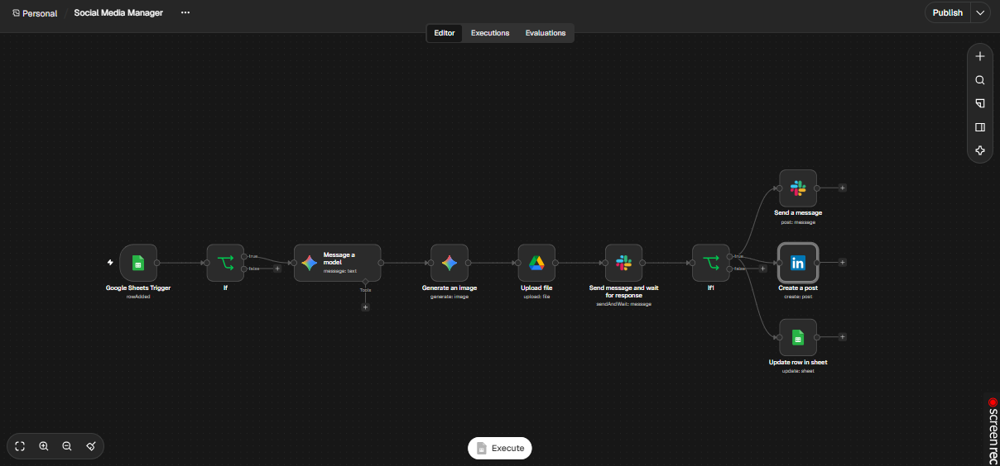

Marketing · Content
Social Media Manager
Add an idea to a Google Sheet; AI writes the post and image, you approve in Slack, and it publishes to LinkedIn.

The problem
Posting regularly takes time: thinking of copy, making an image, getting approval and publishing. Posting often slips because of it.
The solution
Adding a row to Google Sheets starts the workflow. Gemini writes the post and generates an image, which is saved to Google Drive. Slack asks for approval before anything goes public. After approval, the workflow creates the LinkedIn post and updates the sheet row.
How it works
Add a row
A Google Sheets trigger fires when a new row is added, and an If node checks it.
Write the post
A Gemini model writes the post text.
Create the image
Gemini generates an image and the file is uploaded to Google Drive.
Ask for approval
Slack sends a message and waits for a response.
Publish and record
If approved, the post goes to LinkedIn, Slack is notified and the sheet is updated.
See it working
What the screenshots show
- The full 11-node workflow, from the sheet trigger to the LinkedIn post.
A good fit for
- Small businesses and personal brands
- Freelancers and consultants
- Teams that want approval before posting